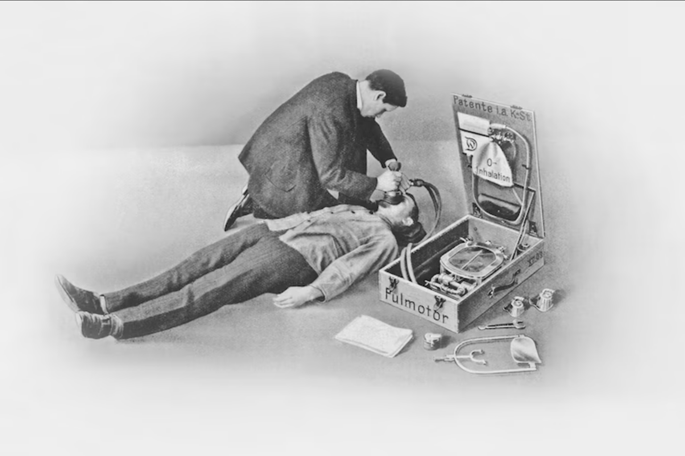

## Career changes "The success of everything depends on intuition, the capacity of seeing things in a way which afterwards proves to be true, even though it cannot be established at the moment, and of grasping the essential fact, discarding the unessential, even though one can give no account of the principles by which this is done." - Joseph A. Schumpeter // Name: Jukka Nikki, Identity: Programmer, Since: 6502 // Skills: Learn as things change
### Internet & Ai bubbles "Look, you bozos, of course they're a bubble, but you're all missing the point. This bubble is attracting so much new capital to this Internet industry, it is going to drive innovation faster and faster." – Bill Gates (early 2000) "Beginning immediately, Stargate will be building the physical and virtual infrastructure to power the next generation of advancements in AI, and this will include the construction of colossal data centers" - Donald Trump (22.1.2025)
#### [Computers](https://www.computerhistory.org/timeline/computers/) - 1941: Konrad Zuse finishes the Z3 Computer - 1948: First Computer Program to Run on a Computer - 1973: Intel introduces the first microprocessor - 1976: Steve Wozniak completes the Apple-1 - 1982: Commodore introduces the Commodore 64 & IBM introduces its Personal Computer (PC)
#### [Internet](https://www.livescience.com/20727-internet-history.html) - 1990: Tim Berners-Lee develops HyperText Markup Language (HTML). - 1994: Netscape Communications is born. Microsoft creates a Web browser for Windows 95. - 1995: The first online dating site, Match.com, launches. - 1998: The Google search engine is born. - 2004: Facebook goes online. - 2005: YouTube.com launches. - 2010: Pinterest and Instagram are launched.
#### [Mobile](https://www.textline.com/blog/smartphone-history) - 1992: the first SMS text message was sent. It read “Merry Christmas” - 1997: The first mobile game Snake at Nokia’s 6110. - 1999 & 2000: Front facing & back facing cameras. - 2004: Live-assisted GPS. - 2007: First iPhone by Apple - 2008: First Android smartphone - 2009: Angry Birds - 2016: TikTok
#### [AI](https://www.tableau.com/data-insights/ai/history) - 1950-1956: Birth - 1957-1979: Maturation - 1980-1987: Boom - 1987-1993: Winter (low interest & financing) - 1993-2011: Agents / Assistants - 2020: OpenAI / GPT-3, creates content almost indistinguishable from those created by humans. - 2021: OpenAI / DALL-E, understands images enough to produce accurate captions.
#### [Food: Aromi](https://www.cgi.com/en/aromi) - plan food production for school, hospital, .. - compare to dietary recommendations - desktop application, no networking, local data - ca. 300 clients at that time - created mid 90s, still at wide use
#### [Aromi: Desktop application](https://www.cgi.com/en/aromi) - example use-case: plan 80 diets for patients that are at hospital next week
#### [Mobile startup: esc]() - Entertainment service center for mobile operators - App store for ringtones, icons, comics, .. - ESC developed from first version of Club Nokia - Lot of venture capital, fast growth, nice people - Hyped at late 90s / early 00s
#### [Esc: Internet / mobile service](https://www.cgi.com/en/aromi) - example use-case: user composes ringtone at web based composer and sends it to own mobile phone over sms. Sending is paid as part of phone bill.
#### [Public sector: tunnistus.fi]() - Authentication service for Finnish public services - Used potentially by all private persons at Finland - banks as identity providers for their customers - Grand opening 20.1.2004 - 2011 over 15,9 mio events - used by finnish ministries - successful project: delivered in time & in budget
#### [Tunnistus: Identity federation](https://www.cgi.com/en/aromi) - example use-case: Tax authority redirects user to authentication server which redirects user to his bank which acts as identity provider. Works because all finns have unique id (social security number) given at birth. All Finnish banks co-operate.
#### [Tunnistus, 2004 - 2012]() - Enabled Kela (krankenkasse) and vero (finanzamt) to automate customer facing processes
#### [Ai startup: exb / ptpt]() - Early mobile assistant - Entity recognition from all users communication - Persons, times, places, tasks - Target: 70+ languages - On device graph database + algorithms - ExB has changed business model and exist still - Early 2010s
#### [PtPt: Ai platform](https://www.cgi.com/en/aromi) - example use-case: Users messages are scanned for entities, which can be used in mobile assistance. Model is delivered over the air to mobile device.
#### [Banking: Deutsche bank / Postbank]() - Clearing of money transactions - Input: Atms, cards (visa, maestro), .. - Data extraction, transformation and analyze - Processing of ca. 20% of German card transactions - Batch processes and administrative UIs - Lot of requirements come from regulators (Eu, ..) - Mid / Late 2010s
#### [Bank: Clearing platform](https://www.cgi.com/en/aromi) - example use-case: Transactions are validated nightly to make sure that money doesn't get lost. All information is analyzed and saved to database so that possible problems can be solved by administrators and reported further.
#### [Automotive: Daimler]() - Charging platform for Electrical Vehicles (EVs) - Integration to two Daimler headunit generations - Mobile clients libraries for Ios and Android - Integrates to chargers at Europa, US and Asia - Many charging providers, interoperability challenges - Late 2010s / Early 2020s
#### [Electo mobility service platform - emsp]() - Example flow: See charging station details (price), start charging, select plug, stop (if supported)
#### [Legal: Actaport]() - Software as service platform for law offices - Secure communication with courts (xjustiz, besondere anwaltpostfach) - Postboxes, Billing, Account management, case management, content management, .. - Tightly integrated with microsoft tools - Startup, strategy: modern web based tools - Early 2020s
#### [Actaport]() - Communicate with customers and courts (gericht), move messages to cases (akte), ..
#### [Medical devices: Humidifier]() - Humidifier for respiratory device (beatmungsgerät) - "Wasserkocker" deluxe for medical use - Class B device, malfunction is not life threatening - Hot steam can create limited harm by burning skin - Usability testing is important part of risk reduction - Project still ongoing (3/2025)
#### [Dräger: Beatmungsgerät]()  - Heinrich Dräger & Pulmotor over 100 years ago
#### [Medical devices: Cardio diagnosis]() - Analyzes signals from hearth - Class B, Used for diagnose - Signals are analyzed with AI algorithms - Faulty diagnose can harm patient - Results sent to hospital information system - Project still ongoing (3/2025)
#### [Poems: Runokaarina / Lorulafka](https://www.kaleva.fi/jukka-nikki-voitti-runo-kaarinan/1962275) <img alt="runot 2004" src="images/kuuma_huuma_karkkipussista.jpg" width="20%"> ["Kuuma Huuma Karkkipussista"](https://www.finna.fi/Record/jykdok.973659) was published 2004 as I won [Runokaarina](https://www.kaleva.fi/jukka-nikki-voitti-runo-kaarinan/1962275) poetry competition. Cover art is by Clown [Kukka Eklund](https://www.linkedin.com/in/kukka-eklund-76a39a7b/), who was performing poems with me and Pianist [Pekka Mattila](https://www.linkedin.com/in/pekka-mattila-46136657/) in "Lorulafka".
#### Title: Generalist, Senior Software Architect "The role of architects has changed from trying to be the smartest person to making everyone else smarter." - Gregor Hohpe Every system is product of people who built it. It has tremendous influence to results how those people see their role and how they work together. Software architecs task is to help all of them. Whatever help they need.
#### Studies: 1991, 1993, 2010 <img alt="runot 2004" src="images/ooa_ood_1993.png" width="60%"> Datanomi 1991 at the times of Cobol, C/C++ & OOA/OOD 1993 when Object orientation was "hot", Bachelor 2010 when Nokia collapsed. Learned procedural programming at 80's with 6502/68000 assembler, object oriented programming at 90's with C++/Java and functional programming at 2010's with TS/Kotlin.
#### Career: [Good People & Helping others](https://www.linkedin.com/posts/nikkijuk_the-best-and-worst-places-to-work-for-developers-activity-6870377845357731840-oOJD/) <img alt="runot 2004" src="images/cgi_thanks.png" width="40%"><img alt="runot 2004" src="images/cgi_arto.png" width="40%"> - Titles are nice, but just a tool. - You need honest and open people around you. - Helping others to succeed breeds motivation. - Sharing is important, not exclusive knowledge.
#### From stability to flux Finland: 15 years at CGI + mobile startup. Germany: Freelancer + AI startup + Bank + Automotive + Legal startup + Medical Devices Challenge: How to learn new culture, language, find as immigrant a place in new society and manage switch from high job status / high communication tasks to lower status and less able to communicate.
#### Mindset: Curiosity, Learning, Teaching, Leading, Programming <img alt="runot 2004" src="images/cpsa.png" width="50%"> - Curiosity (neu'gier) drives growth. - Learning and teaching support each other. - Leading is about helping others to find their way. - Programming is fun, but just one skill you need.
#### Skills: Iterate from Abstract to Concrete "I believe the hard part of building software to be the specification, design, and testing of this conceptual construct, not the labor of representing it and testing the fidelity of the representation." - Fred Brooks - Model: Domain, Requirements, Architecture - Representation: Code, Tests, Documentation If you can't explain it, you can't build it. Models are views to reality. Reality needs to be shared and understood by all stakeholders.
#### Superpowers: 1x & 2x <img alt="runot 2004" src="images/baby_socks.png" width="30%"> I met my wife 2005 and we married 2008. I learned German and passed B1 test 2009 & C1 2014. Our daughters are born 2009 & 2014. We Live in Leipzig, Germany. We have a very well behaving cat sharing cat with our former neighbor. Life is good.
### Shameless [closing quote](https://www.inc.com/marcel-schwantes/this-1-simple-way-of-thinking-separates-smartest-people-from-everyone-else.html) "I have no special talent. I am only passionately curious." - Albert Einstein “People think that computer science is the art of geniuses but the actual reality is the opposite, just many people doing things that build on each other, like a wall of mini stones.” ― Donald Knuth It's only possible to succeed together, to trust and build on shared commitment. Curiosity, playing with ideas and learning from others are most important traits and skills in knowledge game called "work".
"Bad software architecture is a people problem. When people don't work well together they make bad decisions." - Kate Matsudaira "The architect's role is changing from being primarily a decision maker to being a coordinator, advisor, and knowledge manager ... a central knowledge hub." - Rainer Weinreich & Iris Groher "Excessive complexity is nature’s punishment for organizations that are unable to make decisions." - Gregor Hohpe "Creative Destruction is the essential fact about capitalism." - Joseph A. Schumpeter
# Summary // Name: Jukka Nikki, Identity: Programmer, since: 6502 // Title: Generalist, Senior Software Architect // Studies: C & C++, OOA & OOD, Career: Helping others // Mindset: Curious, Learn & Teach, Lead, Program // Skills: Iterate from Abstract to Concrete // Superpowers: 1x Wife, 2x Daughters, Poetry // Goal: Avoid assholes & Jerks, Ordinary people are good